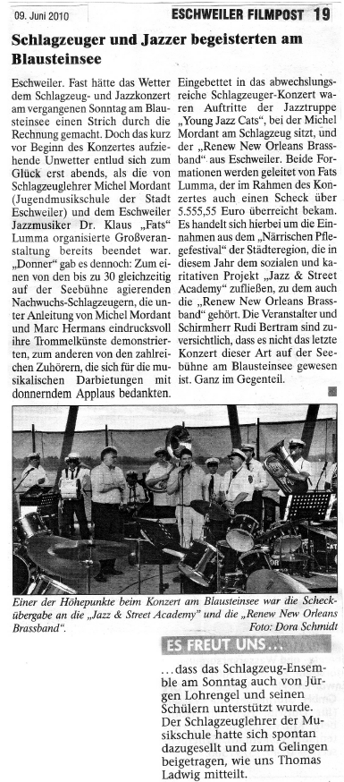
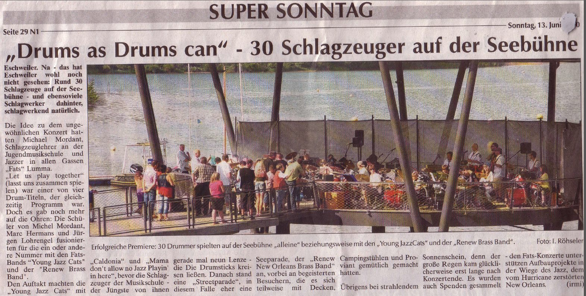
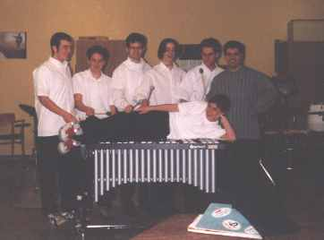

Deutschland · gegründet 1996
Schlagzeugensemble der Jugendmusikschule Eschweiler
Gegründet am 5. Juli 1996 von Michel Mordant. 2019 feierte er mehr als dreißig Jahre als Schlagzeuglehrer an der Musikschule Eschweiler.
- 2027
17. Januar · Heinsberg (in Vorbereitung)
- Brazilian Street Dances — T. O’Connor
- You’re So Cool — H. Zimmer, Arr. F. Kessels
- Sabre Dance — A. Khachaturian (Arr. J. Moore, M. Mordant)
Gemeinsam mit dem JuMu-Ensemble (Burkhard, Tobias, Fynn, Jonas, Tom, Arne): Drummers Go Latin; The Winding River (T. O’Connor); Pirates of the Caribbean (Hans Zimmer, Arr. M. Mordant).
23. Januar · Heinsberg (in Vorbereitung)
Jugend Musiziert: Drummers Go Latin; The Winding River (T. O’Connor); Pirates of the Caribbean (Hans Zimmer, Arr. M. Mordant).
- 2026
10. Oktober · Adams
Percussion & Friends: Egyptian Reggae (J. Richman); You’re So Cool (H. Zimmer, Arr. F. Kessels); Sabre Dance (A. Khachaturian, Arr. J. Moore, M. Mordant).
6. September · Blausteinsee
Familientag der Stadt Eschweiler am Blausteinsee.
16. Juli
Vorspiel der Musikschule.
Januar – März
Jugend musiziert, Drumset (Pop): drei Mitglieder machen mit.
- 2025
18. Dezember
Weihnachtskonzert: Brazilian Street Dances, Sabre Dance, You’re So Cool.
Januar – März
Jugend musiziert, Schlagzeug / Mallets: fünf Mitglieder machen mit.
- 2024
23. Oktober · Adams
Percussion & Friends, in Zusammenarbeit mit dem Schlagzeugensemble Broeksittard. Foto
2. Oktober
Nacht der offenen Kirchen: You’re So Cool (H. Zimmer, Arr. F. Kessels); Rainbows (A. Gomez).
- 2023
- Konzert am Blausteinsee
- Konzert „Am Markt“: Jumpin’ Five (1942) von W. Ludwig
- Konzert zum Tag des Ehrenamtes, Eschweiler: The Entertainer
- 2020
Corona-Jahr: Online-Schlagzeugwettbewerb.

- 2019
Über 30 Jahre Schlagzeugunterricht in Eschweiler. Presseberichte (PDF)

- 2010
„Drumming“ am Blausteinsee — 7. Juni, mit Presseberichten in Super Sonntag und der Eschweiler Filmpost. Programm (PDF) · Plakat (PDF) ·

“30 Schlagzeuger rocken am Samstag die Seebühne” 
“30 Drummer schlagen Wellen am See” 
Eschweiler Filmpost 
“Schlagzeuger lassen es auf der Bühne krachen” 
Super Sonntag — “Drums as Drums can” 
Aachener Zeitung (az-web.de) - 2009
Das Ensemble · Eschweiler Nachrichten, 19. Juni 2009 · Konzertplakat, 14. Juni 2009
- Mission Impossible — Lalo Schifrin, Arr. Will Rapp
- Drumduet — Maarten Rongen
- A La Turca — W. A. Mozart, Arr. Michel Mordant
- Dreaming — Leo Ouderits
- 2008
In diesem Jahr kein Ensemble: kein Proberaum durch die Einführung der Ganztagsschule.
- 2006
14. Mai — Konzert beim PAS Day of Percussion, Maastricht (Niederlande): Centurion March (M. A. Brand); Minimize (M. Mordant); William Tell Overture; Sabre Dance.
22. Juni — Konzert.
- 2005
Timo Coutura.
- 2004
- Konzert, 24. Juni, Eschweiler (Deutschland)
- Konzert, 5. November, Voerendaal (Niederlande)
- 2003
„Jugend musiziert“, 1. Februar, Wuppertal (Deutschland):
- Interplay — G. Whaley
- Minimize — M. Mordant
- Drummers Go Latin — P. Hudec
- Trommeldans — L. Ouderits, Bearb. M. Mordant
- 2002
Presse: Eschweiler Nachrichten, 24.12.2002 · Eschweiler Nachrichten, 24.01.2002 · Super Mittwoch, 27.02.2002 · AZ Eschweiler, 26.01.2002
Konzert beim Marimba Contest 2002 — Programm des Eröffnungskonzerts, 17. August, Kulturzentrum Hasselt (Belgien).
Konzertsaal der Musikschule Stolberg (Deutschland): The Winding River (Thomas O’Connor); Alla Turca (KV 331, W. A. Mozart, für Marimba-Ensemble bearbeitet von M. Mordant); Dreaming (L. Ouderits); Sabre Dance (A. Khachaturian / J. Moore).

Mozarts Alla Turca (KV 331), für Marimba-Ensemble bearbeitet von Michel Mordant. - 2000
Konzertsaal „Patternhof“, Eschweiler
The Winding River (Thomas O’Connor); Drummers Go Latin (Peter Hudec); A La Samba (Mitchell Peters); Allegretto (W. A. Mozart); Mau-Mau Suite (T. Davis); Sabre Dance (A. Khachaturian / J. Moore).
Eschweiler Zeitung: 8. November 2000 · 7. November 2000

Johannes Arnouts, Timo Coutura, Oliver Lamm, Volker Kupper, Christoph Frings und Michel Mordant. Vibraphon: Lucas Stolberg. 17.–22. März · Köln
„Jugend musiziert“ (Landeswettbewerb): Drummers Go Latin (Peter Hudec); A La Samba (Mitchell Peters); The Winding River (Thomas O’Connor); Praça Mauá (Heinz von Moisy).
24. Januar · Mönchengladbach
„Jugend musiziert“ — gleiches Programm. Eschweiler Zeitung: 1. Februar 2000 · 28. Januar 2000
- 1999
- Ausstellung „Schlucklick“, 19. November, Eschweiler: The Winding River; Drummers Go Latin; Allegretto (Mozart)
- Konzert in Achel (Belgien): The Winding River; Drummers Go Latin; Allegretto (Mozart)
- 1996